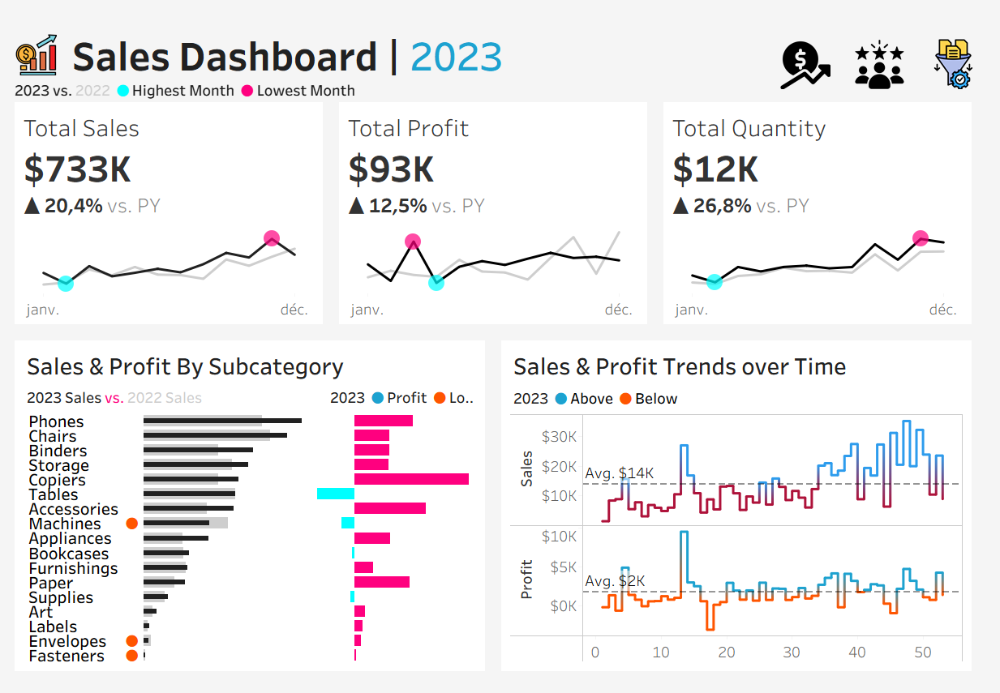
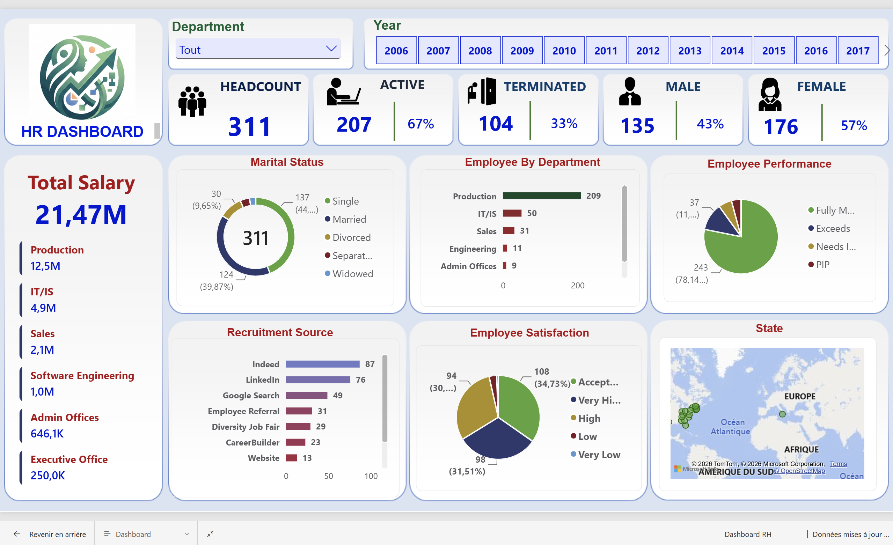
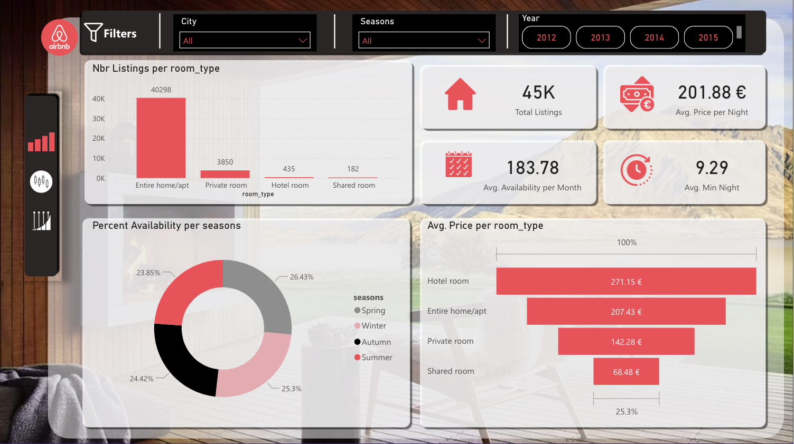
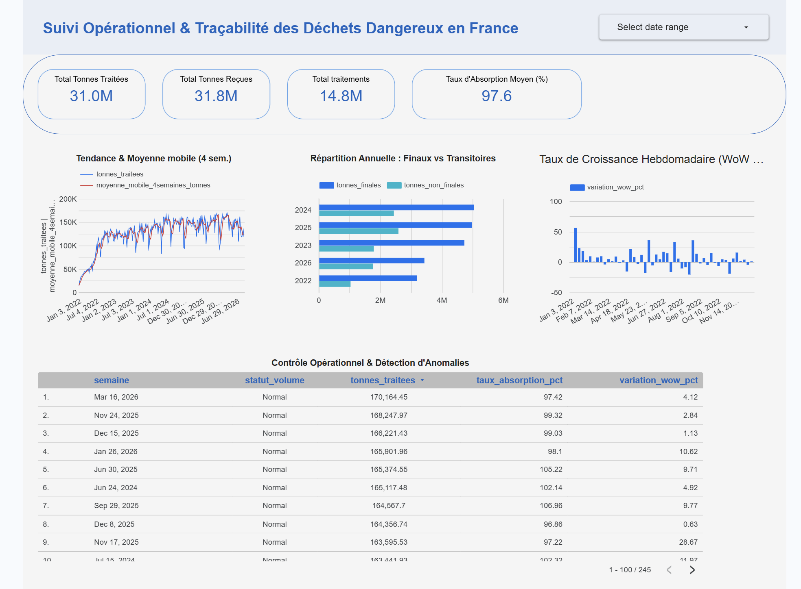
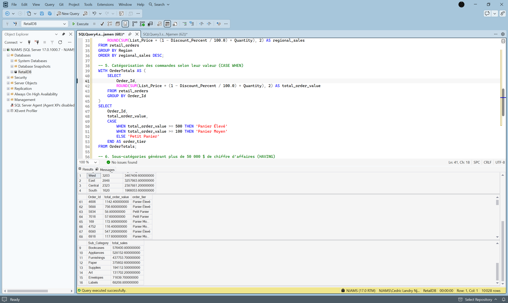
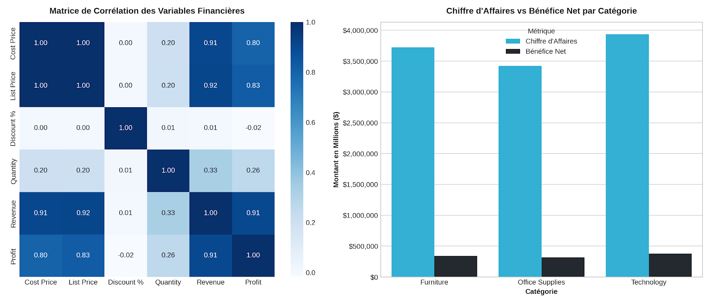

Disponible pour une alternance Data Analyst / BI Analyst
Cedric Njamen
Data Analyst | Business Intelligence | Analytics
Je transforme les données brutes en
insights décisionnels
pour aider les entreprises à mieux comprendre
leurs performances et prendre de meilleures décisions.
Spécialisé dans l'analyse de données,
la création de dashboards BI et l'automatisation
des reporting avec SQL, Python et Power BI.
100K+
Lignes analysées
5+
Projets Data
SQL + BI
Stack analytique
SQL
Python
Power BI
Tableau
BigQuery
Profil Data
Étudiant en MSc Big Data & IA à Epitech Paris,
je développe des solutions analytiques combinant
SQL, Python et outils Business Intelligence.
Mon objectif est de transformer les données complexes
en informations simples, exploitables et orientées
performance business.
Projets Data & Business Intelligence
Des projets construits autour de problématiques
réelles : analyse commerciale, performance client,
ressources humaines et pilotage opérationnel.
Projet Phare
Tableau Desktop
Business Intelligence
Data Modeling
Analyse de la performance commerciale afin
d'identifier les tendances de ventes,
les segments clients les plus rentables
et les opportunités de croissance.
Création d'un dashboard exécutif Tableau avec
modélisation des données, indicateurs KPI,
analyse temporelle et segmentation client.


Transformation des données RH en insights
permettant aux équipes de mieux comprendre
les tendances du personnel et accompagner
les décisions managériales.
Création d'un dashboard Power BI avec
modélisation des données, mesures DAX,
KPI RH et visualisations interactives.

Analyse du marché Airbnb parisien afin
d'identifier les facteurs influençant
les prix et la performance des annonces.
Nettoyage, exploration et analyse des données
avec Python avant restitution sous forme
de dashboard décisionnel.

Création d'une solution analytique dédiée
au suivi de la traçabilité des déchets.
Structuration des données dans BigQuery
et création d'un reporting Looker Studio
pour suivre les indicateurs environnementaux.

Analyse des performances commerciales afin
d'identifier les tendances de ventes,
les produits performants et les opportunités
d'amélioration.
Utilisation de SQL avancé pour construire
des KPI, effectuer des analyses temporelles
et segmenter les performances business.

Exploration d'un historique de transactions
afin d'analyser la rentabilité, le comportement
client et l'impact des remises commerciales.
Traitement des données avec Python et création
d'analyses permettant d'identifier les facteurs
influençant la performance commerciale.
Data Analysis
SQL
Python
Pandas
Excel
Statistiques descriptives
Business Intelligence
Power BI
DAX
Tableau Desktop
Looker Studio
Data Visualization
Data Platform
Google BigQuery
Azure Fundamentals
Data Modeling
Git & GitHub
E-commerce & Web Analytics
Analyse des performances digitales,
suivi des données marketing et amélioration
de la qualité du tracking grâce à Google Analytics,
GTM et Python.
Energy Data Analytics
Analyse de données opérationnelles énergétiques,
automatisation du reporting et création
de dashboards Power BI pour faciliter
le pilotage des activités.